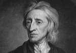

1689 yılında John Locke (1632–1704), ideal devlet biçimini vatandaşlarının doğal haklarına saygı duyan devlet olarak tanımladı. Devletin vatandaşların “canına, özgürlüğüne ve mülküne” kast etmemesi gerektiğinin altını özellikle çiziyordu.

Yaklaşık bir yüzyıl sonra 1776 yılında Thomas Jefferson (1743–1826), Amerikan Bağımsızlık Bildirgesi’ni yazdı. Locke’nun ifadelerini neredeyse olduğu gibi ödünç almıştı. On üç kolonide yaşayan yurttaşların devredilemez haklara sahip olduğunu vurguluyordu: “yaşam, özgürlük ve mutluluğa ulaşma.”
Jefferson’un Locke’a bağlılığı, düşünürün 18. yy’da Avrupa ve Amerikan siyasal yaşamında oynadığı merkezi rolü işaret etmektedir. Locke, Amerikan ve Fransız devrimlerine ilham kaynağı olmuştu. Monarşi karşıtı olan Two Treatises of Government (İki Yönetim Tezi) adlı eseri, Batı demokrasisinin kavramsallaştırılmasına en çok katkıda bulunan eserdir.
Locke, İngiltere’deki Bristol yakınlarında doğdu. Çocukluğu sırasında babasının muzaffer Püritenlerin safında yer aldığı İngiltere iç savaşına tanık oldu. Savaştan sonra Oxford’a giden Locke, felsefe ve tıp eğitimi aldı.
Esas amacı doktor olmaktı. Ne var ki hastalarından biri olan Shaftesburyli Earl (1671–1713) onu politikaya yönlendirdi. Locke ve Shatesbury, Kral 2. Charles’a (1630–1685) yönelik bir suikast girişimine adları karıştığı için Hollanda’ya kaçmak zorunda kaldılar.
Locke, mutlak monarşiyi eleştiren iki önemli eserini de sürgündeyken yazdı. Thomas Hobbes’un (1588–1679) toplumsal sözleşme kuramını geliştirerek devletin yurttaşların haklarına saygı göstermemesi halinde toplumsal sözleşmenin bozulabileceğini söyledi.
Kral 2. James’i (1633–1701) deviren ve monarşi yerine parlamentoyu İngiltere siyasetinin merkezine oturtan 1688 yılındaki devrimin ardından İngiltere’ye geri döndü. Devrimcilerin gözünde bir kahraman olan Locke 1704 yılında öldü.
Ek Bilgiler
1- Locke hiç evlenmedi. Filozof Damaris Cudworth (1659–1708) ile duygusal bir yakınlaşması oldu. Ancak Locke sürgündeyken Damaris, Sir Francis Masham (1645–1722) adında bir başkasıyla evlendi.
2- 1669 yılında Carolina’daki İngiliz kolonilerinin anayasasının yazılmasına yardımcı oldu. Anayasa, o zamanlar için yenilikçi bir fikir olan temsili meclisin kurulmasını bir hak olarak tanımlıyordu. Ne var ki köleliği de meşru kılıyordu. Köleliğin kaldırılması on yıllar sonra mümkün oldu.
3- Locke’un en önemli ve etkili eserlerinden biri de “A Letter Concerning Toleration”dır (Hoşgörü Hakkında Bir Mektup / 1689). Dini özgürlüklerin tanınmasının bir toplum için en doğrusu olduğunu çünkü böylece iç çatışmanın önüne geçileceğini savunuyordu. Ne var ki onun dini tolerans anlayışı sadece farklı Protestan gruplarına yönelikti. Katoliklerin ve ateistlerin toplumdan dışlanması gerektiğini düşünüyordu.